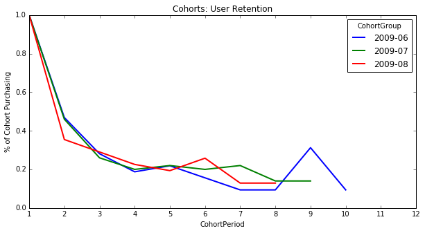
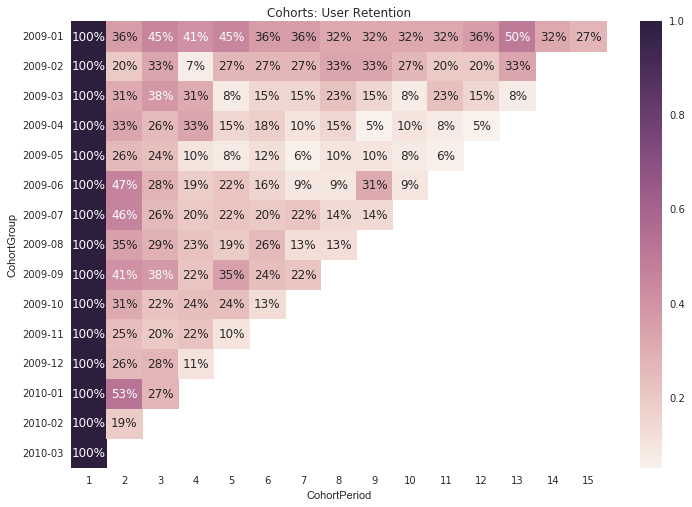
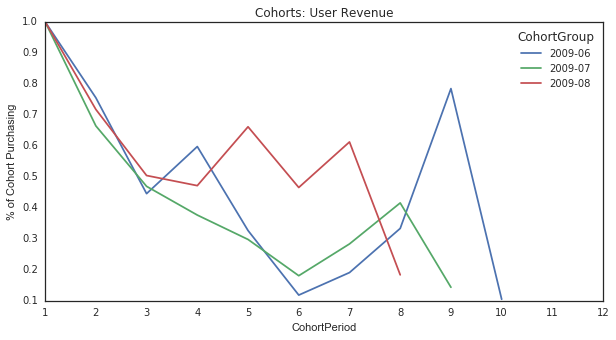
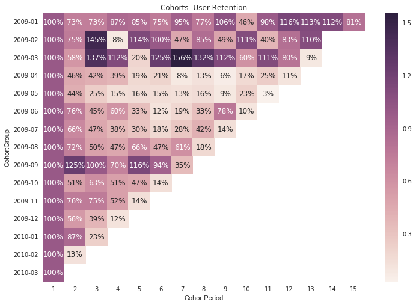

Cohort is a group of people who do something common. The grouping can occur by time period and based on the actions the users take. For example, one cohort can include all the people who signed up for your service in January of 2016 or all the customers who purchased at least one product in February, 2016.
In marketing, you can analyze the actions performed by cohorts by time periods, so you can learn more about the cohorts. For instance, you can see who is coming back later and what actions they are taking etc.
References
-
The code below is inspired by the blog written by Greg Reda
-
The data set below comes from a popular marketing analytics book called Cutting Edge Marketing Analytics. You can download the data set here
%matplotlib inline
import pandas as pd
import numpy as np
import matplotlib.pyplot as plt
import matplotlib as mt
pd.set_option('max_columns', 50)
mpl.rcParams['lines.linewidth'] = 2
# Load the data set from the excel spread sheet
df = pd.read_excel('/Users/Pandu/Personal/School/Data Science/Case Studies/Case Studies/Cohort Analysis/relay-foods.xlsx')
## See the top 5 rows
df.head()
| OrderId | OrderDate | UserId | TotalCharges | CommonId | PupId | PickupDate | |
|---|---|---|---|---|---|---|---|
| 0 | 262 | 2009-01-11 | 47 | 50.67 | TRQKD | 2 | 2009-01-12 |
| 1 | 278 | 2009-01-20 | 47 | 26.60 | 4HH2S | 3 | 2009-01-20 |
| 2 | 294 | 2009-02-03 | 47 | 38.71 | 3TRDC | 2 | 2009-02-04 |
| 3 | 301 | 2009-02-06 | 47 | 53.38 | NGAZJ | 2 | 2009-02-09 |
| 4 | 302 | 2009-02-06 | 47 | 14.28 | FFYHD | 2 | 2009-02-09 |
# Understand the data and the range of values
df.describe()
| OrderId | UserId | TotalCharges | PupId | |
|---|---|---|---|---|
| count | 2891.000000 | 2891.000000 | 2891.000000 | 2891.000000 |
| mean | 1763.644414 | 85586.842269 | 59.947184 | 6.848495 |
| std | 855.881824 | 96952.929059 | 55.009949 | 4.613567 |
| min | 256.000000 | 47.000000 | 1.390000 | 2.000000 |
| 25% | 1021.500000 | 5534.000000 | 22.965000 | 4.000000 |
| 50% | 1778.000000 | 42270.000000 | 44.810000 | 5.000000 |
| 75% | 2504.500000 | 132044.000000 | 79.600000 | 7.000000 |
| max | 3234.000000 | 396551.000000 | 690.982700 | 20.000000 |
df.info()
<class 'pandas.core.frame.DataFrame'>
RangeIndex: 2891 entries, 0 to 2890
Data columns (total 7 columns):
OrderId 2891 non-null int64
OrderDate 2891 non-null datetime64[ns]
UserId 2891 non-null int64
TotalCharges 2891 non-null float64
CommonId 2891 non-null object
PupId 2891 non-null int64
PickupDate 2891 non-null datetime64[ns]
dtypes: datetime64[ns](2), float64(1), int64(3), object(1)
memory usage: 158.2+ KB
1. Create a period column based on the OrderDate
Since we're doing monthly cohorts, we'll be looking at the total monthly behavior of our users. Therefore, we don't want granular OrderDate data (right now).
df['OrderPeriod'] = df.OrderDate.apply(lambda x: x.strftime('%Y-%m'))
df.head()
| OrderId | OrderDate | UserId | TotalCharges | CommonId | PupId | PickupDate | OrderPeriod | |
|---|---|---|---|---|---|---|---|---|
| 0 | 262 | 2009-01-11 | 47 | 50.67 | TRQKD | 2 | 2009-01-12 | 2009-01 |
| 1 | 278 | 2009-01-20 | 47 | 26.60 | 4HH2S | 3 | 2009-01-20 | 2009-01 |
| 2 | 294 | 2009-02-03 | 47 | 38.71 | 3TRDC | 2 | 2009-02-04 | 2009-02 |
| 3 | 301 | 2009-02-06 | 47 | 53.38 | NGAZJ | 2 | 2009-02-09 | 2009-02 |
| 4 | 302 | 2009-02-06 | 47 | 14.28 | FFYHD | 2 | 2009-02-09 | 2009-02 |
2. Determine the user's cohort group (based on their first order)
Create a new column called CohortGroup, which is the year and month in which the user's first purchase occurred.
The new column now only contains the segmentation by month and year.
df.set_index('UserId', inplace=True)
df['CohortGroup'] = df.groupby(level=0)['OrderDate'].min().apply(lambda x: x.strftime('%Y-%m'))
df.reset_index(inplace=True)
df.head()
| UserId | OrderId | OrderDate | TotalCharges | CommonId | PupId | PickupDate | OrderPeriod | CohortGroup | |
|---|---|---|---|---|---|---|---|---|---|
| 0 | 47 | 262 | 2009-01-11 | 50.67 | TRQKD | 2 | 2009-01-12 | 2009-01 | 2009-01 |
| 1 | 47 | 278 | 2009-01-20 | 26.60 | 4HH2S | 3 | 2009-01-20 | 2009-01 | 2009-01 |
| 2 | 47 | 294 | 2009-02-03 | 38.71 | 3TRDC | 2 | 2009-02-04 | 2009-02 | 2009-01 |
| 3 | 47 | 301 | 2009-02-06 | 53.38 | NGAZJ | 2 | 2009-02-09 | 2009-02 | 2009-01 |
| 4 | 47 | 302 | 2009-02-06 | 14.28 | FFYHD | 2 | 2009-02-09 | 2009-02 | 2009-01 |
3. Rollup data by CohortGroup & OrderPeriod
Since we're looking at monthly cohorts, we need to aggregate users, orders, and amount spent by the CohortGroup within the month (OrderPeriod).
What we want to find out next is the aggregated count of users, charges and orders by cohort periods
grouped = df.groupby(['CohortGroup', 'OrderPeriod'])
# count the unique users, orders, and total revenue per Group + Period
cohorts = grouped.agg({'UserId': pd.Series.nunique,
'OrderId': pd.Series.nunique,
'TotalCharges': np.sum})
# make the column names more meaningful
cohorts.rename(columns={'UserId': 'TotalUsers',
'OrderId': 'TotalOrders'}, inplace=True)
cohorts.head()
| TotalUsers | TotalCharges | TotalOrders | ||
|---|---|---|---|---|
| CohortGroup | OrderPeriod | |||
| 2009-01 | 2009-01 | 22 | 1850.255 | 30 |
| 2009-02 | 8 | 1351.065 | 25 | |
| 2009-03 | 10 | 1357.360 | 26 | |
| 2009-04 | 9 | 1604.500 | 28 | |
| 2009-05 | 10 | 1575.625 | 26 |
cohorts.head()
| TotalUsers | TotalCharges | TotalOrders | ||
|---|---|---|---|---|
| CohortGroup | OrderPeriod | |||
| 2009-01 | 2009-01 | 22 | 1850.255 | 30 |
| 2009-02 | 8 | 1351.065 | 25 | |
| 2009-03 | 10 | 1357.360 | 26 | |
| 2009-04 | 9 | 1604.500 | 28 | |
| 2009-05 | 10 | 1575.625 | 26 |
4. Label the CohortPeriod for each CohortGroup
We want to look at how each cohort has behaved in the months following their first purchase, so we'll need to index each cohort to their first purchase month. For example, CohortPeriod = 1 will be the cohort's first month, CohortPeriod = 2 is their second, and so on.
This allows us to compare cohorts across various stages of their lifetime.
def cohort_period(df):
"""
Creates a `CohortPeriod` column, which is the Nth period based on the user's first purchase.
Example
-------
Say you want to get the 3rd month for every user:
df.sort(['UserId', 'OrderTime', inplace=True)
df = df.groupby('UserId').apply(cohort_period)
df[df.CohortPeriod == 3]
"""
df['CohortPeriod'] = np.arange(len(df)) + 1
#print(df)
#print(df.shape)
#print(len(df))
return df
cohorts = cohorts.groupby(level=0).apply(cohort_period)
cohorts.head()
| TotalUsers | TotalCharges | TotalOrders | CohortPeriod | ||
|---|---|---|---|---|---|
| CohortGroup | OrderPeriod | ||||
| 2009-01 | 2009-01 | 22 | 1850.255 | 30 | 1 |
| 2009-02 | 8 | 1351.065 | 25 | 2 | |
| 2009-03 | 10 | 1357.360 | 26 | 3 | |
| 2009-04 | 9 | 1604.500 | 28 | 4 | |
| 2009-05 | 10 | 1575.625 | 26 | 5 |
5. Make sure we did all that right
Let's test data points from the original DataFrame with their corresponding values in the new cohorts DataFrame to make sure all our data transformations worked as expected. As long as none of these raise an exception, we're good.
x = df[(df.CohortGroup == '2009-01') & (df.OrderPeriod == '2009-01')]
y = cohorts.ix[('2009-01', '2009-01')]
assert(x['UserId'].nunique() == y['TotalUsers'])
assert(x['TotalCharges'].sum() == y['TotalCharges'])
assert(x['OrderId'].nunique() == y['TotalOrders'])
x = df[(df.CohortGroup == '2009-01') & (df.OrderPeriod == '2009-09')]
y = cohorts.ix[('2009-01', '2009-09')]
assert(x['UserId'].nunique() == y['TotalUsers'])
assert(x['TotalCharges'].sum() == y['TotalCharges'])
assert(x['OrderId'].nunique() == y['TotalOrders'])
x = df[(df.CohortGroup == '2009-05') & (df.OrderPeriod == '2009-09')]
y = cohorts.ix[('2009-05', '2009-09')]
assert(x['UserId'].nunique() == y['TotalUsers'])
assert(x['TotalCharges'].sum() == y['TotalCharges'])
assert(x['OrderId'].nunique() == y['TotalOrders'])
User Retention by Cohort Group
We want to look at the percentage change of each CohortGroup over time -- not the absolute change.
To do this, we'll first need to create a pandas Series containing each CohortGroup and its size.
# reindex the DataFrame
cohorts.reset_index(inplace=True)
cohorts.set_index(['CohortGroup', 'CohortPeriod'], inplace=True)
# create a Series holding the total size of each CohortGroup
cohort_group_size = cohorts['TotalUsers'].groupby(level=0).first()
cohort_group_size.head()
CohortGroup
2009-01 22
2009-02 15
2009-03 13
2009-04 39
2009-05 50
Name: TotalUsers, dtype: int64
Now, we'll need to divide the TotalUsers values in cohorts by cohort_group_size. Since DataFrame operations are performed based on the indices of the objects, we'll use unstack on our cohorts DataFrame to create a matrix where each column represents a CohortGroup and each row is the CohortPeriod corresponding to that group.
To illustrate what unstack does, recall the first five TotalUsers values:
cohorts['TotalUsers'].head()
CohortGroup CohortPeriod
2009-01 1 22
2 8
3 10
4 9
5 10
Name: TotalUsers, dtype: int64
And here's what they look like when we unstack the CohortGroup level from the index:
cohorts['TotalUsers'].unstack(0).head()
| CohortGroup | 2009-01 | 2009-02 | 2009-03 | 2009-04 | 2009-05 | 2009-06 | 2009-07 | 2009-08 | 2009-09 | 2009-10 | 2009-11 | 2009-12 | 2010-01 | 2010-02 | 2010-03 |
|---|---|---|---|---|---|---|---|---|---|---|---|---|---|---|---|
| CohortPeriod | |||||||||||||||
| 1 | 22.0 | 15.0 | 13.0 | 39.0 | 50.0 | 32.0 | 50.0 | 31.0 | 37.0 | 54.0 | 130.0 | 65.0 | 95.0 | 100.0 | 24.0 |
| 2 | 8.0 | 3.0 | 4.0 | 13.0 | 13.0 | 15.0 | 23.0 | 11.0 | 15.0 | 17.0 | 32.0 | 17.0 | 50.0 | 19.0 | NaN |
| 3 | 10.0 | 5.0 | 5.0 | 10.0 | 12.0 | 9.0 | 13.0 | 9.0 | 14.0 | 12.0 | 26.0 | 18.0 | 26.0 | NaN | NaN |
| 4 | 9.0 | 1.0 | 4.0 | 13.0 | 5.0 | 6.0 | 10.0 | 7.0 | 8.0 | 13.0 | 29.0 | 7.0 | NaN | NaN | NaN |
| 5 | 10.0 | 4.0 | 1.0 | 6.0 | 4.0 | 7.0 | 11.0 | 6.0 | 13.0 | 13.0 | 13.0 | NaN | NaN | NaN | NaN |
Now, we can utilize broadcasting to divide each column by the corresponding cohort_group_size.
The resulting DataFrame, user_retention, contains the percentage of users from the cohort purchasing within the given period. For instance, 38.4% of users in the 2009-03 purchased again in month 3 (which would be May 2009).
user_retention = cohorts['TotalUsers'].unstack(0).divide(cohort_group_size, axis=1)
user_retention.head(10)
| CohortGroup | 2009-01 | 2009-02 | 2009-03 | 2009-04 | 2009-05 | 2009-06 | 2009-07 | 2009-08 | 2009-09 | 2009-10 | 2009-11 | 2009-12 | 2010-01 | 2010-02 | 2010-03 |
|---|---|---|---|---|---|---|---|---|---|---|---|---|---|---|---|
| CohortPeriod | |||||||||||||||
| 1 | 1.000000 | 1.000000 | 1.000000 | 1.000000 | 1.00 | 1.00000 | 1.00 | 1.000000 | 1.000000 | 1.000000 | 1.000000 | 1.000000 | 1.000000 | 1.00 | 1.0 |
| 2 | 0.363636 | 0.200000 | 0.307692 | 0.333333 | 0.26 | 0.46875 | 0.46 | 0.354839 | 0.405405 | 0.314815 | 0.246154 | 0.261538 | 0.526316 | 0.19 | NaN |
| 3 | 0.454545 | 0.333333 | 0.384615 | 0.256410 | 0.24 | 0.28125 | 0.26 | 0.290323 | 0.378378 | 0.222222 | 0.200000 | 0.276923 | 0.273684 | NaN | NaN |
| 4 | 0.409091 | 0.066667 | 0.307692 | 0.333333 | 0.10 | 0.18750 | 0.20 | 0.225806 | 0.216216 | 0.240741 | 0.223077 | 0.107692 | NaN | NaN | NaN |
| 5 | 0.454545 | 0.266667 | 0.076923 | 0.153846 | 0.08 | 0.21875 | 0.22 | 0.193548 | 0.351351 | 0.240741 | 0.100000 | NaN | NaN | NaN | NaN |
| 6 | 0.363636 | 0.266667 | 0.153846 | 0.179487 | 0.12 | 0.15625 | 0.20 | 0.258065 | 0.243243 | 0.129630 | NaN | NaN | NaN | NaN | NaN |
| 7 | 0.363636 | 0.266667 | 0.153846 | 0.102564 | 0.06 | 0.09375 | 0.22 | 0.129032 | 0.216216 | NaN | NaN | NaN | NaN | NaN | NaN |
| 8 | 0.318182 | 0.333333 | 0.230769 | 0.153846 | 0.10 | 0.09375 | 0.14 | 0.129032 | NaN | NaN | NaN | NaN | NaN | NaN | NaN |
| 9 | 0.318182 | 0.333333 | 0.153846 | 0.051282 | 0.10 | 0.31250 | 0.14 | NaN | NaN | NaN | NaN | NaN | NaN | NaN | NaN |
| 10 | 0.318182 | 0.266667 | 0.076923 | 0.102564 | 0.08 | 0.09375 | NaN | NaN | NaN | NaN | NaN | NaN | NaN | NaN | NaN |
Finally, we can plot the cohorts over time in an effort to spot behavioral differences or similarities. Two common cohort charts are line graphs and heatmaps, both of which are shown below.
Notice that the first period of each cohort is 100% -- this is because our cohorts are based on each user's first purchase, meaning everyone in the cohort purchased in month 1.
user_retention[['2009-06', '2009-07', '2009-08']].plot(figsize=(10,5))
plt.title('Cohorts: User Retention')
plt.xticks(np.arange(1, 12.1, 1))
plt.xlim(1, 12)
plt.ylabel('% of Cohort Purchasing');

# Creating heatmaps in matplotlib is more difficult than it should be.
# Thankfully, Seaborn makes them easy for us.
# http://stanford.edu/~mwaskom/software/seaborn/
import seaborn as sns
sns.set(style='white')
plt.figure(figsize=(12, 8))
plt.title('Cohorts: User Retention')
sns.heatmap(user_retention.T, mask=user_retention.T.isnull(), annot=True, fmt='.0%');

Unsurprisingly, we can see from the above chart that fewer users tend to purchase as time goes on.
However, we can also see that the 2009-01 cohort is the strongest, which enables us to ask targeted questions about this cohort compared to others -- what other attributes (besides first purchase month) do these users share which might be causing them to stick around? How were the majority of these users acquired? Was there a specific marketing campaign that brought them in? Did they take advantage of a promotion at sign-up? The answers to these questions would inform future marketing and product efforts.
Cohort analysis by Revenue
User retention is only one way of using cohorts to look at your business — we could have also looked at revenue retention. That is, the percentage of each cohort’s month 1 revenue returning in subsequent periods. User retention is important, but we shouldn’t lose sight of the revenue each cohort is bringing in (and how much of it is returning).
The work below shows similar logic, but for revenue rentention (returning customer purchases)
# reindex the DataFrame
cohorts.reset_index(inplace=True)
cohorts.set_index(['CohortGroup', 'CohortPeriod'], inplace=True)
# create a Series holding the total size of each CohortGroup
cohort_group_size = cohorts['TotalCharges'].groupby(level=0).first()
cohort_group_size.head()
CohortGroup
2009-01 1850.255
2009-02 666.310
2009-03 806.310
2009-04 2561.250
2009-05 2627.560
Name: TotalCharges, dtype: float64
cohorts['TotalCharges'].head()
CohortGroup CohortPeriod
2009-01 1 1850.255
2 1351.065
3 1357.360
4 1604.500
5 1575.625
Name: TotalCharges, dtype: float64
cohorts['TotalCharges'].unstack(0).head()
| CohortGroup | 2009-01 | 2009-02 | 2009-03 | 2009-04 | 2009-05 | 2009-06 | 2009-07 | 2009-08 | 2009-09 | 2009-10 | 2009-11 | 2009-12 | 2010-01 | 2010-02 | 2010-03 |
|---|---|---|---|---|---|---|---|---|---|---|---|---|---|---|---|
| CohortPeriod | |||||||||||||||
| 1 | 1850.255 | 666.31 | 806.31 | 2561.25 | 2627.5600 | 1544.2200 | 2797.7600 | 2605.9981 | 1953.0553 | 3802.2525 | 6738.5869 | 4571.6911 | 9677.9032 | 7374.7108 | 1099.5471 |
| 2 | 1351.065 | 501.61 | 463.80 | 1189.58 | 1146.8300 | 1165.9000 | 1858.3499 | 1869.4376 | 2433.3013 | 1957.8872 | 5107.4213 | 2565.4410 | 8453.1039 | 945.9633 | NaN |
| 3 | 1357.360 | 968.78 | 1108.21 | 1085.38 | 648.2100 | 688.2129 | 1312.8502 | 1313.7691 | 1953.2262 | 2394.5338 | 5046.8124 | 1785.7853 | 2238.6461 | NaN | NaN |
| 4 | 1604.500 | 53.36 | 902.71 | 987.13 | 381.1500 | 922.7762 | 1053.5599 | 1228.7399 | 1371.3499 | 1952.0574 | 3486.0959 | 534.0929 | NaN | NaN | NaN |
| 5 | 1575.625 | 758.52 | 161.25 | 474.01 | 415.5969 | 504.4159 | 833.4690 | 1723.3975 | 2262.0346 | 1783.1022 | 961.3681 | NaN | NaN | NaN | NaN |
user_revenue = cohorts['TotalCharges'].unstack(0).divide(cohort_group_size, axis=1)
user_revenue.head(10)
| CohortGroup | 2009-01 | 2009-02 | 2009-03 | 2009-04 | 2009-05 | 2009-06 | 2009-07 | 2009-08 | 2009-09 | 2009-10 | 2009-11 | 2009-12 | 2010-01 | 2010-02 | 2010-03 |
|---|---|---|---|---|---|---|---|---|---|---|---|---|---|---|---|
| CohortPeriod | |||||||||||||||
| 1 | 1.000000 | 1.000000 | 1.000000 | 1.000000 | 1.000000 | 1.000000 | 1.000000 | 1.000000 | 1.000000 | 1.000000 | 1.000000 | 1.000000 | 1.000000 | 1.000000 | 1.0 |
| 2 | 0.730205 | 0.752818 | 0.575213 | 0.464453 | 0.436462 | 0.755009 | 0.664228 | 0.717360 | 1.245895 | 0.514928 | 0.757937 | 0.561158 | 0.873444 | 0.128271 | NaN |
| 3 | 0.733607 | 1.453948 | 1.374422 | 0.423770 | 0.246697 | 0.445670 | 0.469250 | 0.504133 | 1.000088 | 0.629767 | 0.748942 | 0.390618 | 0.231315 | NaN | NaN |
| 4 | 0.867178 | 0.080083 | 1.119557 | 0.385409 | 0.145059 | 0.597568 | 0.376573 | 0.471505 | 0.702156 | 0.513395 | 0.517333 | 0.116826 | NaN | NaN | NaN |
| 5 | 0.851572 | 1.138389 | 0.199985 | 0.185070 | 0.158168 | 0.326648 | 0.297906 | 0.661320 | 1.158203 | 0.468959 | 0.142666 | NaN | NaN | NaN | NaN |
| 6 | 0.748459 | 1.001186 | 1.253612 | 0.207470 | 0.148069 | 0.118448 | 0.180945 | 0.465518 | 0.943621 | 0.143617 | NaN | NaN | NaN | NaN | NaN |
| 7 | 0.946270 | 0.471515 | 1.558293 | 0.081775 | 0.133843 | 0.191035 | 0.283461 | 0.612430 | 0.352618 | NaN | NaN | NaN | NaN | NaN | NaN |
| 8 | 0.771013 | 0.851714 | 1.324459 | 0.132402 | 0.159952 | 0.333494 | 0.415736 | 0.183722 | NaN | NaN | NaN | NaN | NaN | NaN | NaN |
| 9 | 1.061624 | 0.492684 | 1.122845 | 0.057521 | 0.085086 | 0.784523 | 0.143586 | NaN | NaN | NaN | NaN | NaN | NaN | NaN | NaN |
| 10 | 0.464979 | 1.108997 | 0.602742 | 0.173956 | 0.233609 | 0.104985 | NaN | NaN | NaN | NaN | NaN | NaN | NaN | NaN | NaN |
user_revenue[['2009-06', '2009-07', '2009-08']].plot(figsize=(10,5))
plt.title('Cohorts: User Revenue')
plt.xticks(np.arange(1, 12.1, 1))
plt.xlim(1, 12)
plt.ylabel('% of Cohort Purchasing');

# Creating heatmaps in matplotlib is more difficult than it should be.
# Thankfully, Seaborn makes them easy for us.
# http://stanford.edu/~mwaskom/software/seaborn/
import seaborn as sns
sns.set(style='white')
plt.figure(figsize=(12, 8))
plt.title('Cohorts: User Retention')
sns.heatmap(user_revenue.T, mask=user_revenue.T.isnull(), annot=True, fmt='.0%');
